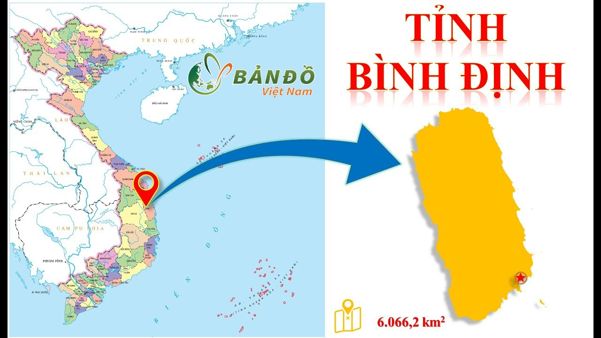
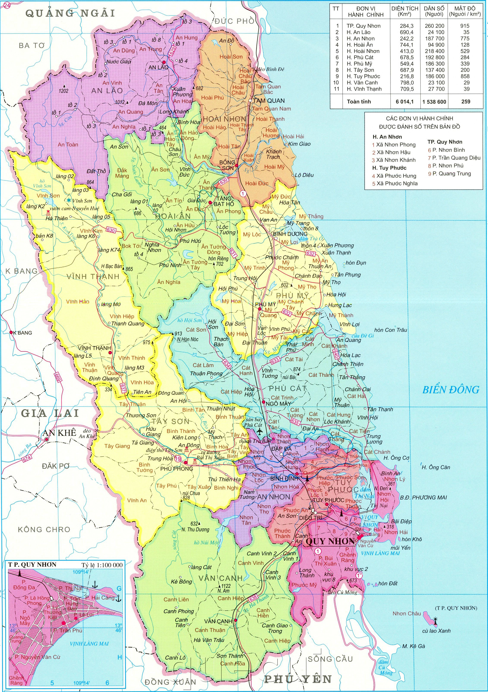

Bình Định là một tỉnh ven biển thuộc vùng Duyên hải Nam Trung Bộ của Việt Nam. Tỉnh nằm ở vị trí trung tâm của khu vực, giữ vai trò là cầu nối quan trọng giữa Tây Nguyên và vùng duyên hải miền Trung. Phía Bắc Bình Định giáp tỉnh Quảng Ngãi, phía Nam giáp tỉnh Phú Yên, phía Tây giáp tỉnh Gia Lai và phía Đông giáp Biển Đông với đường bờ biển dài và nhiều vũng, vịnh đẹp.
Nhờ vị trí địa lí thuận lợi, Bình Định có điều kiện phát triển đa dạng các lĩnh vực như kinh tế biển, du lịch, giao thương và dịch vụ. Hệ thống giao thông của tỉnh khá hoàn chỉnh với quốc lộ, đường sắt Bắc – Nam, cảng biển và sân bay, tạo điều kiện thuận tiện cho việc kết nối với các tỉnh, thành phố lớn trong cả nước. Vị trí địa lí đặc biệt này không chỉ góp phần thúc đẩy sự phát triển kinh tế – xã hội của Bình Định mà còn làm tăng vai trò chiến lược của tỉnh trong khu vực Nam Trung Bộ và Tây Nguyên.
Bình Định là một tỉnh ven biển thuộc khu vực Duyên hải Nam Trung Bộ của Việt Nam, có diện tích tự nhiên khoảng 6.066 km². Với địa hình đa dạng gồm núi, đồng bằng và vùng biển, Bình Định có nhiều điều kiện thuận lợi để phát triển nông nghiệp, ngư nghiệp, công nghiệp và du lịch.
Tỉnh hiện có dân số khoảng 1,5 triệu người, phân bố không đồng đều giữa khu vực thành thị và nông thôn. Người dân Bình Định nổi tiếng với tính cách cần cù, chịu khó, thẳng thắn và nghĩa tình, góp phần tạo nên bản sắc văn hóa riêng của vùng đất võ.
Trung tâm chính trị, kinh tế và văn hóa của tỉnh là thành phố Quy Nhơn – một đô thị ven biển năng động, đang ngày càng phát triển và thu hút du khách trong và ngoài nước.
Bình Định là một tỉnh có hệ thống đơn vị hành chính tương đối hoàn chỉnh và ổn định. Hiện nay, tỉnh được chia thành 11 đơn vị hành chính cấp huyện, bao gồm 1 thành phố, 2 thị xã và 8 huyện, đáp ứng tốt yêu cầu quản lý và phát triển kinh tế – xã hội.
Thành phố Quy Nhơn là trung tâm hành chính, chính trị, kinh tế và văn hóa của tỉnh, đồng thời là đô thị ven biển quan trọng của khu vực Nam Trung Bộ.
Bên cạnh đó, Bình Định còn có 2 thị xã là An Nhơn và Hoài Nhơn, giữ vai trò là các trung tâm kinh tế – thương mại của từng khu vực trong tỉnh.
8 huyện còn lại gồm: Tuy Phước, Phù Cát, Phù Mỹ, Tây Sơn, An Lão, Hoài Ân, Vân Canh và Vĩnh Thạnh. Các huyện này có thế mạnh về nông nghiệp, lâm nghiệp, ngư nghiệp và đang từng bước phát triển du lịch sinh thái, du lịch văn hóa.
Sự phân chia đơn vị hành chính hợp lý đã tạo điều kiện thuận lợi cho Bình Định trong công tác quản lý, phát triển kinh tế – xã hội và nâng cao đời sống của người dân.
